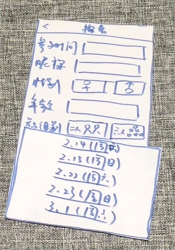
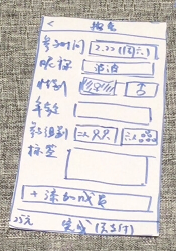

Prototype
Prototype includes 2 parts: online wechat official account and offline cooking activities. For wechat official account, we made paper prototype. For cooking activities, we created the a Blind Date Kitchen with plasticine.

